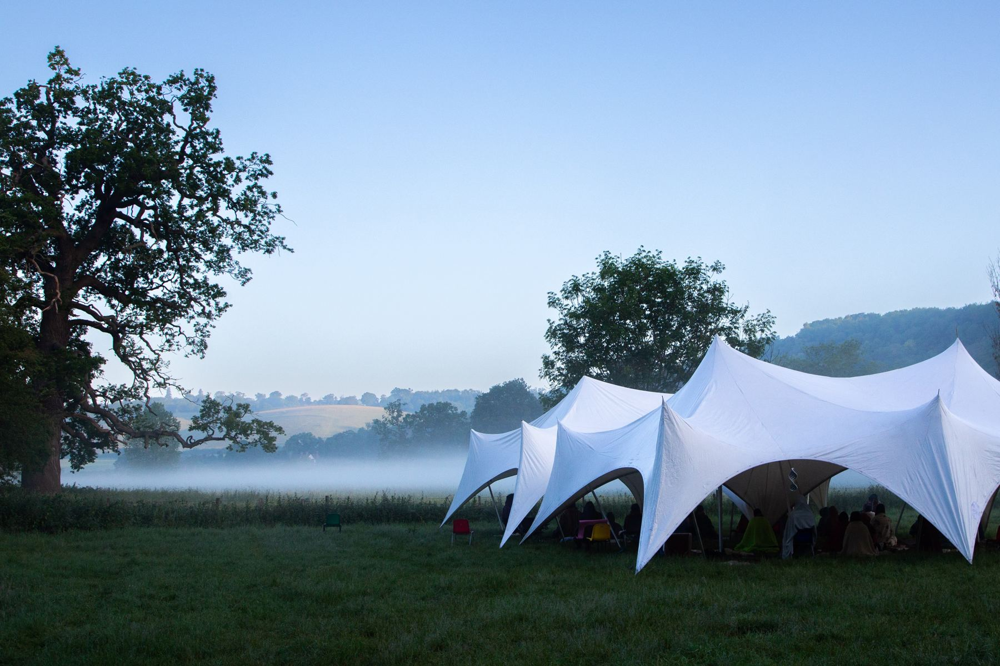

7-Day Insight Vipassana Silent Retreat, 2027
Hardwick Estate, on the River Thames in South Oxfordshire. Five full days of noble silence. Teaching offered for dāna.
Choose your dates
Booking opens in a secure WeTravel checkout window. You choose your date and accommodation, then pay a £75 deposit to hold your place.
Find inner peace
An ancient method of meditation, pristinely simple in principle and profoundly transformative in application.
Live in silence for a few days in a quiet natural place with clean, fresh air, in the Chilterns. Give yourself a digital detox: phone off, a break from the flow of information and endless tasks. Follow a healthy daily rhythm with the sun. Eat nourishing plant-based food, much of it grown organically on the estate. And slow down: plenty of quiet time to listen inwardly.
Silence is kept for five full days. The only exception is the optional personal interviews with the teacher, to clarify anything about the practice.

What's included
- Five days of silence, the rare peace of total quiet
- Sitting meditation, learning the noting method step by step
- Walking meditation, the dynamic practice that traditionally accompanies sitting
- Daily yoga to prepare the body and ease hips, knees and back
- Dhamma talks on the nature of mind, with stories from the suttas
- Teacher interviews for personal guidance
- Ayurvedic meals and teas, organic and locally sourced where possible
- Riverside sauna on day one and day seven
- Wild swimming in a clean stretch of the Thames
- Campsite ground rent, hot showers and toilets
Not included
- Tent (unless rented at booking), bedding
- Cutlery and crockery: please bring your own
- Yoga mat and a blanket for sitting (a few can be borrowed on request)
- Massage and bodywork with the on-site therapists, at a reduced rate
Accommodation
Camp in the secluded riverside campsite: bring your own tent, campervan or caravan at no extra cost, or rent a pre-erected tent or a deluxe bell tent with a framed bed at checkout. Tents are single occupancy. No dogs, please.
A day on retreat
Monastery life: a simple schedule, a bell instead of a clock. Please follow it in full; it is designed for continuity of practice.

A generosity-based retreat
1. Organisational fee: £149 (deposit £75). Covers the basic costs of accommodation and food.
2. Dāna for the teaching itself. It's important for vipassana to be offered for donation, not for private gain. At the end of the retreat, based on what the week gave you, you offer whatever you feel moved to give.
A few seva tickets are available for those who'd like to help the core team, or who can't afford the full fee. Apply through the booking page.
Getting there
Hardwick Estate, Whitchurch-on-Thames, RG8 7RA. About 40 minutes by train from London Paddington to Reading or Pangbourne, then a short taxi. By car, 20 minutes from Junction 12 of the M4. London Heathrow is about an hour away.
The retreat is free from drugs, alcohol and intoxicants which cloud the mind.
Your teachers and hosts
Dmitry Glazkov teaches vipassana in the Mahasi tradition, yoga and Ayurveda, here and at the Indriya Retreat Centre in Thailand. Karen Buckland leads the kitchen with plant-based Ayurvedic cooking. Bara Cechova leads yoga, breathwork and bodywork.
From past retreats
“This was an amazing retreat - my best yet and I’ve been on a lot all over the world. The teachings were amazing, the food exemplary. It was a truly nurturing experience.”
Anita M., Sadhama retreat guest
“This retreat was truly exceptional, possibly the best I’ve ever attended… Their deep knowledge of yoga and wellness was evident in every session, making each practice enriching and accessible for all levels.”
Ian M., Sadhama retreat guest
“Under Dmitry’s kind, humorous and humble guidance, one can find their way back to their true selves… The food was another level!”
Rachel B., Sadhama retreat guest
“Dmitry is a brilliant communicator, able to make everyone laugh and to push on in cold weather, and to pay close attention and offer incisive, precise and compassionate guidance when required.”
Daniel A., Sadhama retreat guest
“The silence allowed for a deep immersion into the practice, fostering an environment of profound inner peace and clarity.”
Dionne H., Sadhama retreat guest
More silent retreats with Dmitry
Insight Vipassana Silent Retreat, Koh Phangan. The same Mahasi noting practice, at the Indriya Retreat Centre by the sea on Koh Phangan, Thailand. From $350 (deposit $100).
Book ThailandPractice of Peace. Gentle meditation, yoga, forest bathing, sauna and plenty of time for yourself over the August bank holiday. A soft first step towards a 7 or 10-day vipassana.
Book Practice of PeaceRetreat FAQ
What is a vipassana retreat?
A residential silent meditation retreat where you train in insight meditation, vipassana, based on the Buddha's four foundations of mindfulness. Our retreats follow the Mahasi Sayadaw noting tradition: sitting and walking meditation, Dhamma talks and teacher interviews, in noble silence.
Can beginners attend?
Yes. Every group includes first-timers. The technique is taught step by step from the first evening, sittings are 45 minutes, alternating with walking meditation, and there is gentle yoga each morning.
How much does it cost?
The organisational fee is £149 (deposit £75), covering plant-based meals and camping. The teaching is offered for dāna: you give what you feel moved to give at the end. A few reduced-cost seva places are available on application.
Where are the retreats held?
At Hardwick Estate, Whitchurch-on-Thames, South Oxfordshire (RG8 7RA), on the River Thames in the Chilterns. About 40 minutes by train from London Paddington, or 20 minutes from Junction 12 of the M4.
Where do I sleep?
You camp in the riverside campsite: bring your own tent, campervan or caravan, or rent a pre-erected tent or a bell tent with a framed bed when you book. Tents are single occupancy. There are hot showers and a riverside sauna.
Do I need to be Buddhist?
No. Vipassana is a universal method of observing your own experience. It needs no belief system, and people of any religion or none practise it.
How is it different from a Goenka 10-day course?
Both come from the Satipaṭṭhāna. Goenka courses use breath at the nostrils and body scanning over ten days; we teach rising-and-falling noting with formal walking meditation, live teacher talks and interviews, and daily yoga, over seven days.
How do I book?
Booking is through WeTravel: press "Book your place", choose your date and accommodation, and pay a £75 deposit to secure your place.